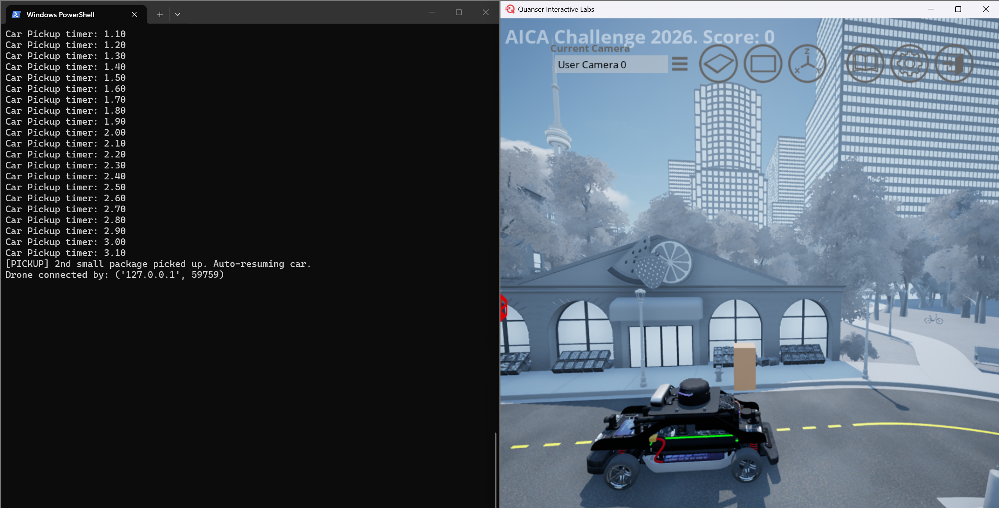
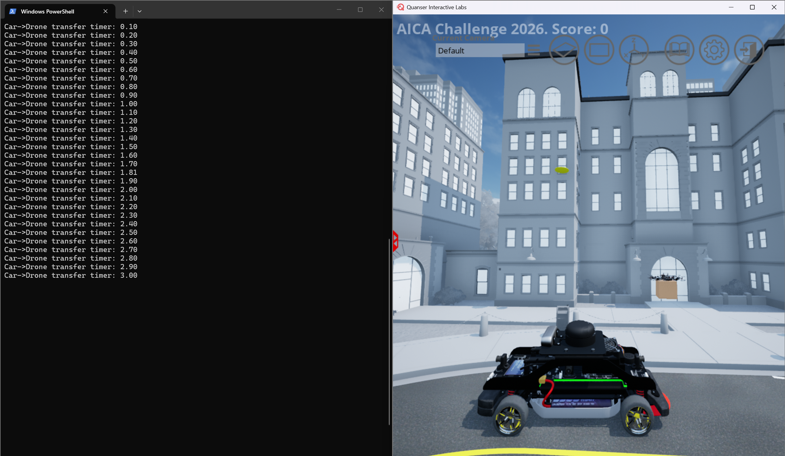
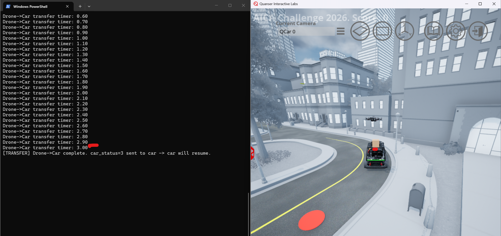
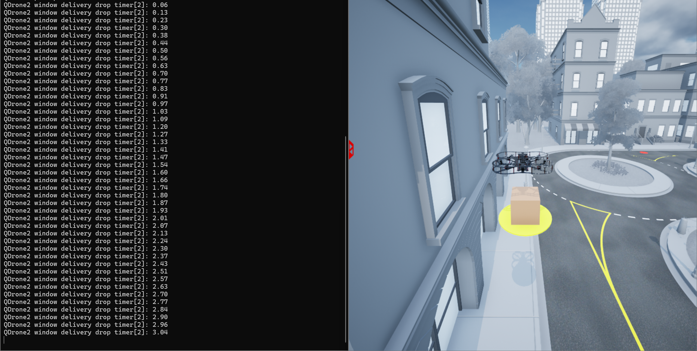
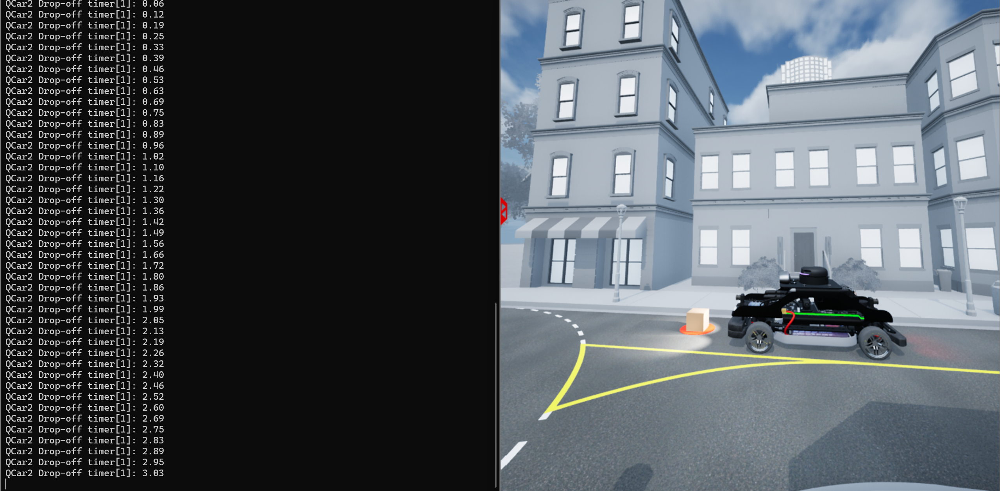
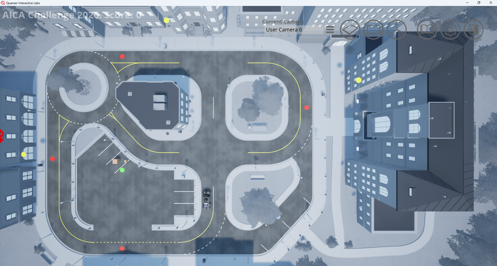

Virtual Stage Detailed Scenario
This page describes the mission environment, delivery workflow, key location data, and strategy context for the AICA Virtual Stage.
Navigation
Scenario Summary
- AICA Challenge Virtual Stage is a collaborative autonomy challenge where teams design, implement, and demonstrate a delivery system using a QCar2 and a QDrone2 operating in a shared mission environment.
- The scenario focuses on demonstrating the ability to perform multimodal delivery through package pickup, route execution, and final delivery using either window delivery or shared drop-off methods.
- Vehicle-to-vehicle transfer is supported as an optional coordination feature and may be used if it benefits the team’s delivery strategy.
1) System Setup
~~Each team is provided with one QCar2 and QDrone2.~~
The QCar2 can pick up packages from the central pickup location, deliver them to shared drop-off locations, and transfer packages to and from the QDrone2. Similarly, the QDrone2 can pick up packages from the central pickup location, deliver them to shared drop-off or window delivery locations, and transfer packages to and from the QCar2.
Vehicle Speed Limits
- QCar2 max speed: 13 m/s
- QDrone2 max speed: 2 - 3.5 m/s
~~Vehicles may operate below these limits, but must not exceed them.~~
Initial Vehicle Locations
- The initial spawn positions and headings (yaw angles) of the QCar2 and QDrone2 can be adjusted by editing the
spawn_location.txtfile. - For both QCar2 and QDrone2, intentions must be listed. Create tables. 0, 1, 2, 3, 4,5 for QCar2 and 0,1,2,3,4 for QDrone2.
2) Central Pickup Operations
At mission start:
- All packages are located at the central pickup location.
- There are 5 delivery tasks: 4 small-package deliveries and 1 large-package delivery.
- The QCar2 can pick up both small and large packages.
- The QDrone2 can only pick up small packages.
- The central pickup location is indicated by green pad in QLabs screen.
Pickup Condition
A pickup is successful when:
- The QCar2 picks up a small package after remaining within 2.0 m of the pickup location for 3 seconds while its intention is set to 1.
- The QCar2 picks up a large package after remaining within 2.0 m of the pickup location for 3 seconds while its intention is set to 2.
- The QDrone2 picks up a small package after remaining within 2.0 m horizontal distance and within a vertical offset of 0.0 m to 4.0 m from the pickup location for 3 seconds while its intention is set to 1.
After the required hold time, the package is considered loaded.
Carry Constraints
Current carry limits at a time are:
- QCar2: 2 small packages or 1 large package
- QDrone2: 1 small package
Example for Qcar2 with 2 packages

3) Vehicle-to-Vehicle Transfer
To enable collaborative autonomy, transfer is allowed in both directions:
- QCar2 → QDrone2
- QDrone2 → QCar2
Transfer Condition
A transfer is successful when:
- QDrone2 is within 2.0 m horizontal distance of QCar2
- QDrone2 remains within 0.0 m to 4.0 m vertical offset relative to QCar2
- The required transfer condition is maintained for 3 seconds
- QDrone2 intention must be set to 4 and QCar2 intention must be set to 4 for QDrone2 → QCar2 transfer.
- QDrone2 intention must be set to 3 and QCar2 intention must be set to 5 for QCar2 → QDrone2 transfer.
After this, package ownership transfers to the receiving vehicle.
Example Transfer
QCar2 → QDrone2

QDrone2 → QCar2

4) Delivery Locations
Each delivery has two options.
A) Window Delivery (QDrone2 Only)
- Delivery is performed directly to the apartment window
- This delivery mode provides bonus points.
- Window delivery locations are indicated by yellow pads.
B) Shared Drop-Off Location
- A Shared Drop-Off point is provided for each apartment building
- QCar2 or QDrone2 can deliver to this location
- Shared drop-off locations are indicated by red pads for small-package deliveries and a blue pad for the large-package delivery.
Teams should consider both the delivery type and the scoring difference when planning delivery order and strategy.
5) Delivery Completion
Window Delivery (QDrone2)
- The QDrone2 must remain within 2.0 m horizontal distance and within 0.0 m to 4.0 m vertical offset of the window delivery location for at least 3 seconds while its intention is set to 2.
Example Window Delivery

Shared Drop off Delivery (Car or Drone)
- QCar2: Must remain within 2.0 m of the drop location for at least 3 seconds while its intention is set to 3
- QDrone2: Must remain within 2.0 m horizontal distance and within 0.0 m to 4.0 m vertical offset of the drop location for at least 3 seconds while its intention is set to 2.
Example Shared drop off Delivery by Car

6) Pick up and Delivery Location
- Central pickup: (Green Pad) P
- Small package delivery locations: (Red Pad) D1, D2, D3, D4
- Large package delivery location: (Blue Pad) D5

Important Note
- The QCar2 uses node numbers for route planning and location coordinates for control.
- Node numbering is different between Python and MATLAB / Simulink for QCar2.
- The QDrone2 uses location coordinates for both path planning and control.
- Use the QCar2 table for pickup and drop node selection in car routing
- Use the QDrone2 table for pickup, drop, and window delivery target coordinates
Figure: QCar2 node numbering reference showing the Python mapping

Figure: QCar2 node numbering reference showing the MATLAB / Simulink mapping.

QCar2 Pickup and Delivery Reference
| Location | Package Type | Python Node | MATLAB / Simulink Node | Shared Drop-Off Location [x y] |
|---|---|---|---|---|
| Central pickup (P) | Pickup | 24 | 25 | [-2.50305 29.6703] |
| Drop Location 1 (D1) | Small | 2 | 3 | [11.2739 -10.84655] |
| Drop Location 2 (D2) | Small | 14 | 15 | [22.5478 29.6703] |
| Drop Location 3 (D3) | Small | 20 | 21 | [0.0 44.9735] |
| Drop Location 4 (D4) | Small | 22 | 23 | [-19.84125 29.6703] |
| Drop Location 5 (D5) | Large | 10 | 11 | [-12.8205 -4.5991] |
QDrone2 Pickup and Delivery Reference
| Location | Package Type | Shared Drop-Off Location [x y z] |
Floor | Window Delivery Location [x y z] |
|---|---|---|---|---|
| Central pickup (P) | Pickup | [-2.50305 29.6703 0.05] |
- | None |
| Drop Location 1 (D1) | Small | [11.2739 -10.84655 0.05] |
4 | [15.1739 -18.04655 9.65] |
| Drop Location 2 (D2) | Small | [22.5478 29.6703 0.05] |
3 | [26.0478 16.7703 9.65] |
| Drop Location 3 (D3) | Small | [0.0 44.9735 0.05] |
2 | [1.3 46.9735 4.85] |
| Drop Location 4 (D4) | Small | [-19.84125 29.6703 0.05] |
1 | None |
| Drop Location 5 (D5) | Large | [-12.8205 -4.5991 0.05] |
1 | None |
Strategy Note
Teams are free to choose delivery order, task allocation, and delivery method based on their own mission strategy.
Back to: